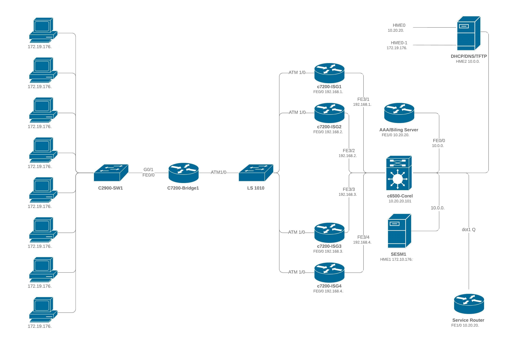

“ Un ordinateur en sécurité est un ordinateur éteint. Et encore... ” Bill Gates
Enjeu majeur du Numérique : la cybersécurité
Au sein d’un réseau la communication est vaste et complexe, au
travers des codes d’indentifcations ( IP, MAC, ARP, etc…) et plateformes physiques (switch, routeur, serveur,
etc…) et de plus différentes connectiques filaires et sans fil. Tout cela forme un système d’information qui
nécessite de la sécurité et de l’organisation.

Article en lien avec la sécurité s'appliquant aussi sur les réseaux